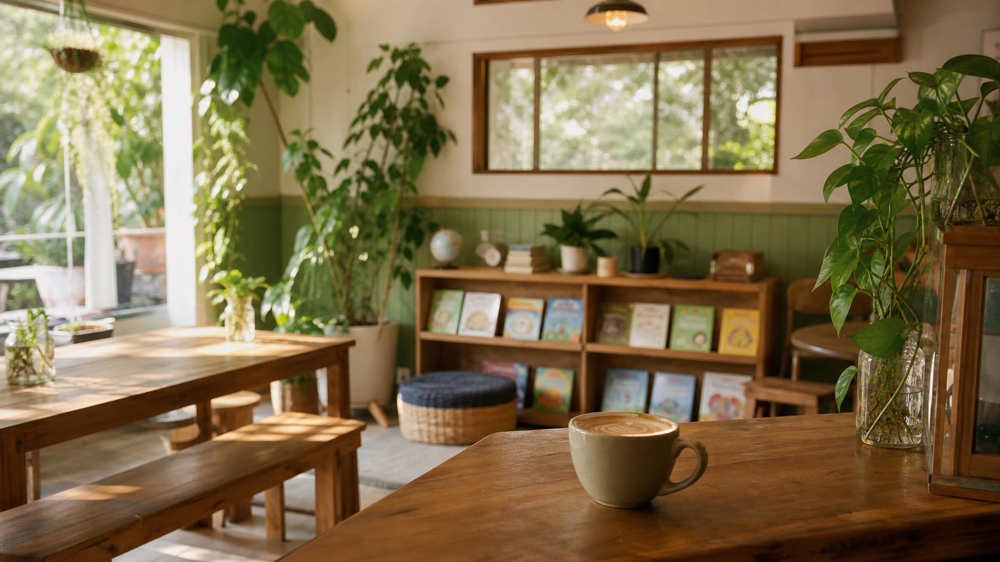
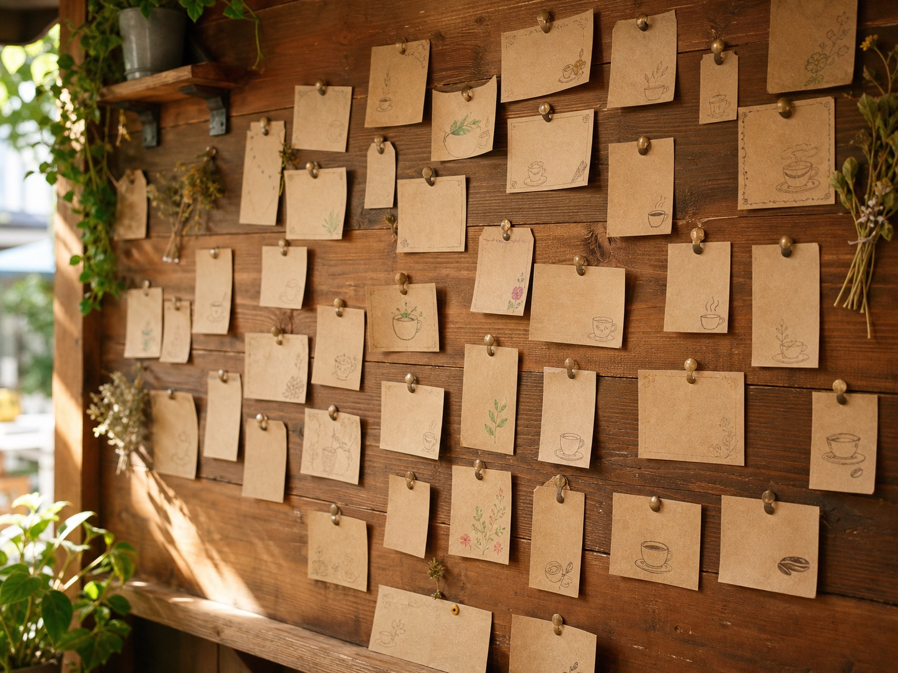
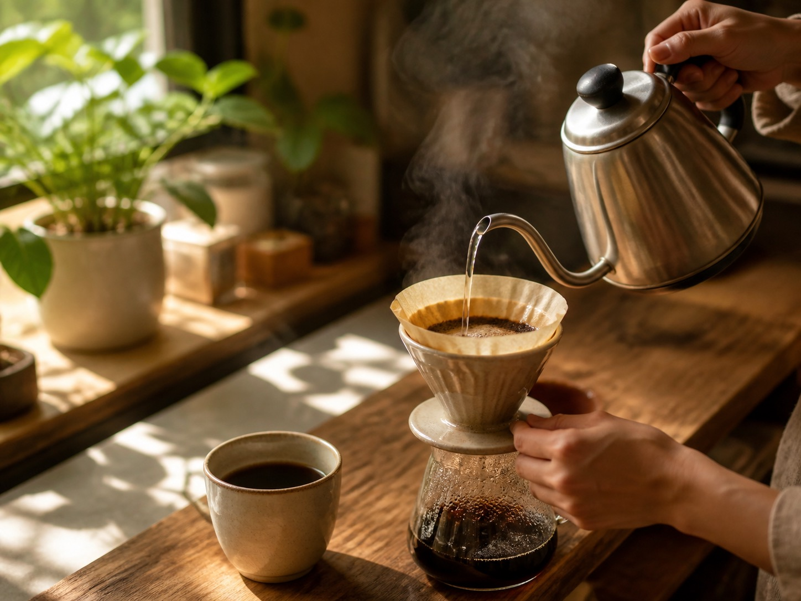
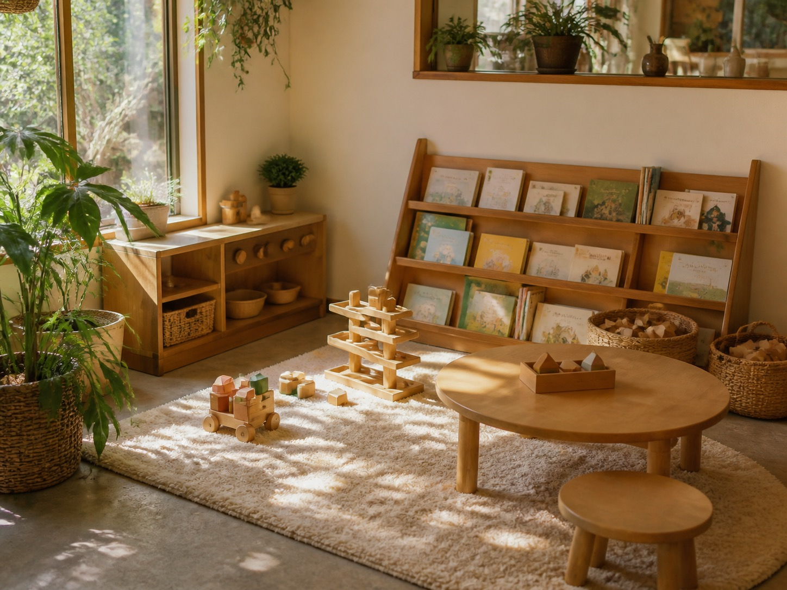
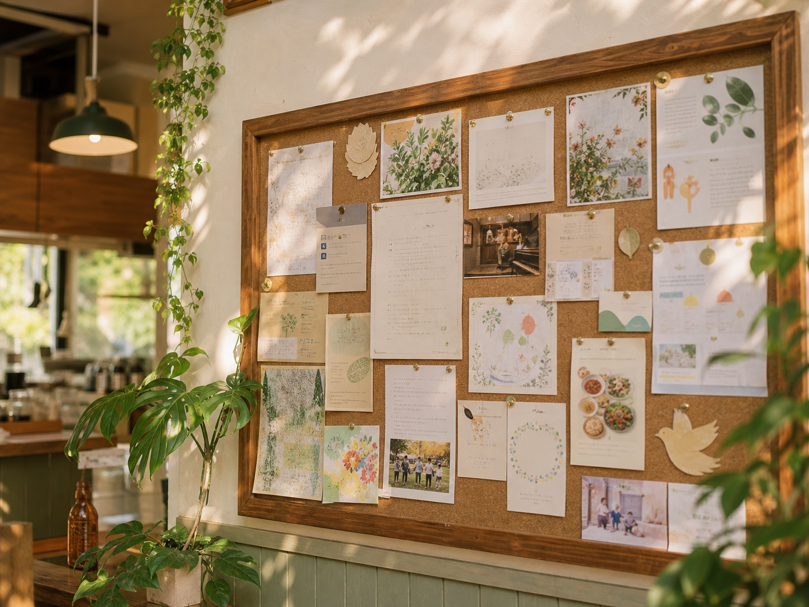

子ども食堂と連携した、地域のコミュニティカフェ
いつものカフェに通うだけで、
地域の子どもたちの居場所づくりに参加できる。
そんな、まちに開かれた一杯を。
支えたい気持ちも、つながりたい気持ちも、きっと多くの人が持っています。
足りないのは、その気持ちを無理なく差し出せる「日常の入口」だけなのだと思います。
こもれびコーヒーは、おいしい一杯を楽しむ日常の延長で、
地域の子どもたちの居場所づくりに自然と関われるカフェです。
カフェの日常性
気軽に立ち寄れて、ゆっくり過ごせる居心地のよさ。
子ども食堂の意義
地域の子どもの一食と居場所を、みんなで支える仕組み。
地域のつながり
顔の見える関係が生まれる、まちのハブ。
この三つを掛け合わせて、「日常的に通うだけで地域に貢献できる居場所」を目指しています。
2杯分のコーヒーを買うと、1杯分が「恩送りカード」として店内の壁に貼られます。お金に余裕のない日でも、誰かが残してくれたその一杯で、あたたかい時間を過ごせます。
2杯分を買う
自分の一杯と、もう一杯分。いつもの会計に、少しだけ添えるだけ。
カードを壁に貼る
「あたたかい一杯をどうぞ」。手書きのカードが、壁に少しずつ増えていきます。
誰かが受け取る
そのカードで、誰かが一杯を。顔も名前も知らないまま、まちの中で支え合えます。

この一杯の売上の一部は、連携する子ども食堂の運営にあてられます。支援は強制しません。いつも通りに楽しむだけで、十分に届きます。

あなたが過ごすあたたかい時間が、
そのまま誰かの居場所になる。
あたたかい食事を、誰もが安心して囲める場所に。
子育てを家庭だけに抱え込まず、地域みんなで見守ります。
子どもも大人も、やってみたいに出会える小さなきっかけを。
顔の見える関係から、まちのつながりを少しずつ育てます。

泣いてもいい、こぼしてもいい。子どもがいる時間そのものを、まちが歓迎する場所でありたいと考えています。

壁の掲示板には、子ども食堂の開催日や、まちのイベント、ちょっとしたお願いごとが並びます。一杯飲みに来たついでに、地域のいまに出会えます。
大きな決意はいりません。まずは一杯飲みに来ることから。気が向いたときに、もう一歩を選べます。
コーヒーを一杯飲む。それだけで、もう参加しています。
もう一杯分を、まだ見ぬ誰かのために残せます。
子ども食堂の日の運営を、少しだけ手伝えます。
お米や野菜のおすそ分けも、ありがたく受け取ります。
ここには、店主の言葉や、地域の方の生の声が入ります。お店のコンセプトや活動内容の資料をいただいたら、その想いと現場の言葉でこの場所を上書きします。借り物ではない、本当の声でいちばん人が動くからです。
※ 本セクションは提供素材を反映するためのプレースホルダです。